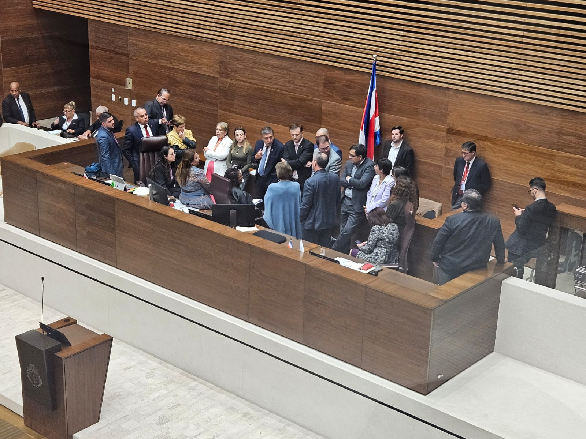

Исполняющая обязанности председателя Конгресса, Росалия Браун,
указала, что голосование состоится во вторник без необходимости
окончательного решения.

Руководители и заместители фракций тайно договорились в этот
понедельник дождаться полного решения Четвёртого зала по запросу
проекта закона «Ягуар», который 22 законодателя отправили, но
который был отклонён судьями как несостоятельный, прежде чем
голосовать по просьбе о референдуме от Президентского дворца. Это
решение не было сообщено СМИ, несмотря на то, что оно противоречит
всему сказанному исполняющей обязанности председателя Конгресса,
депутатом от партии «Новая Республика» Росалией Браун, которая в
понедельник днём заявила, что исполнительный указ, содержащий запрос
на народный опрос, будет вынесен на голосование во вторник на
пленарном заседании, даже без полного решения Четвёртого зала. Во
вторник журналист «Новой Республики» Хуан Диего Лопес сообщил в
пресс-чате фракции, что по мнению экспертов, для вынесения указа на
голосование в пленуме не требуется полного решения (для утверждения
требуется 29 голосов). «Тем не менее, депутаты всех фракций вчера
поздно вечером приняли решение дождаться полного решения, и теперь
всё будет зависеть от того, как быстро Четвёртый зал передаст это
решение для вынесения на голосование», — отметил он. Затем он
отправил видео президента Браун, где она указывает, что применяет
резолюцию, оставленную председателем Конгресса Родриго Ариасом
(отстранённым по болезни), и руководителями фракций. «Если решение
Конституционного зала поступит до 15:00 (время начала пленарного
заседания), мы сможем проголосовать по вопросу референдума, если не
успеем, придётся продлить срок для голосования», — заявила депутат.
На данный момент Четвёртый зал не сообщил, готово ли полное решение.
Глава правящей партии Пилар Сиснерос указала, что у неё есть
информация о том, что полное решение уже составлено, но нет ясности,
будет ли оно отправлено сегодня в Конгресс. Руководитель фракции
Национально-освободительной партии (PLN) Оскар Искьердо отметил, что
даже если решение придет сегодня, он не думает, что его можно
вынести на голосование, так как фракциям потребуется время для его
изучения. Стоит напомнить, что депутаты уходят на летние каникулы в
эту пятницу и возобновят свои обязанности в следующий понедельник, 8
июля. Лопес не уточнил, была ли просьба не сообщать об этом решении
от самих законодателей.